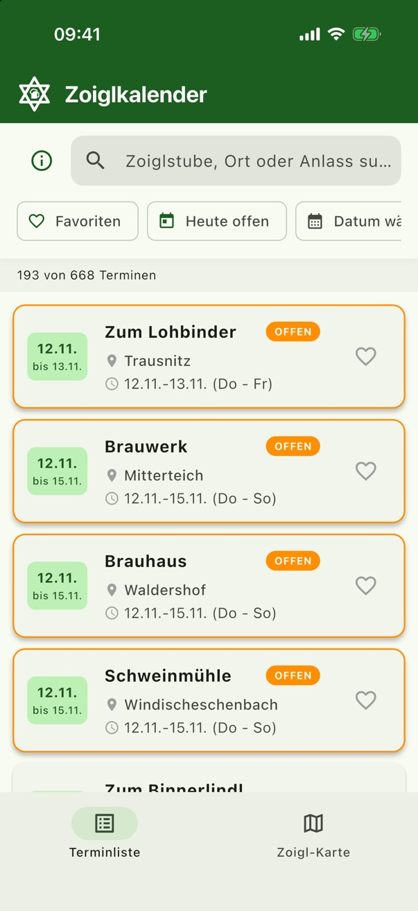
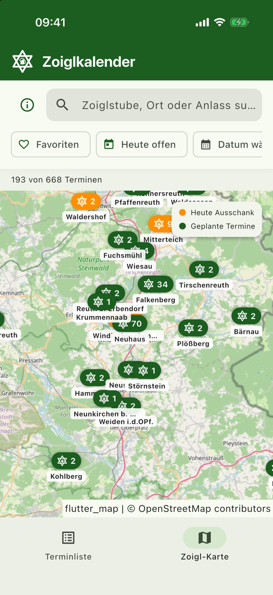
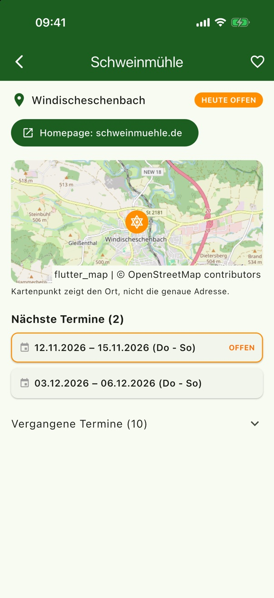

Wo gibt’s heute Zoigl?
ZoiglZeit ist der Zoiglkalender für die Hosentasche. Die App zeigt dir, welche Zoiglstube in der nördlichen Oberpfalz heute ausschenkt, wo sie liegt und wann der nächste Termin ist.
Kostenlos · ohne Werbung · ohne Konto · Open Source

Alles, was du für den nächsten Zoigl brauchst
Kein Durchblättern von gedruckten Kalendern mehr: Die App bündelt alle Termine und zeigt sofort, was gerade offen ist.
Heute offen
Ein Tipp, und du siehst alle Zoiglstuben, die heute ausschenken, deutlich in Orange markiert.
Zoigl-Karte
Alle Zoiglorte auf einer Karte. Orange heißt Ausschank heute, grün sind die geplanten Termine.
Favoriten
Merk dir deine Lieblingsstuben und filtere die Liste mit einem Tipp nur auf ihre Termine.
Suche & Datum
Nach Zoiglstube, Ort oder Anlass suchen oder ein Datum wählen, etwa fürs nächste Wochenende.
Infos zur Zoiglstube
Jede Stube hat eine eigene Seite mit Lage, Homepage-Link sowie allen kommenden und vergangenen Terminen.
Privat & offline
Kein Konto, kein Tracking, keine Werbung. Die Termine sind in der App gespeichert und auch ohne Netz da.
So sieht ZoiglZeit aus
Übersichtlich, schnell und in den Farben der Oberpfälzer Wälder.


Was ist eigentlich Zoigl?
Zoigl ist ein untergäriges, meist naturtrübes Bier aus der nördlichen Oberpfalz. Gebraut wird es nicht in einer großen Brauerei, sondern im gemeinschaftlichen Kommunbrauhaus des Ortes. Die brauberechtigten Bürger holen die Würze dort ab und lassen sie im eigenen Keller vergären.
Ausgeschenkt wird der Zoigl dann reihum in der eigenen Stube, an festen Tagen, die über das Jahr verteilt sind. Genau diese Termine im Blick zu behalten, ist gar nicht so einfach, und dafür gibt es ZoiglZeit.
Der Zoiglstern
Hängt der sechszackige Stern vor dem Haus, ist Zoigl-Zeit: Dann hat die Stube offen. Er geht auf das alte Brauer- und Schankzeichen zurück.
- Typische Kommunbrau-Orte: Eslarn, Falkenberg, Mitterteich, Neuhaus und Windischeschenbach
- Dazu Brotzeit, Gemütlichkeit und oft Live-Musik
Ein Hobbyprojekt aus der Oberpfalz
ZoiglZeit ist ein privates Projekt ohne kommerzielle Absichten. Der Quellcode ist frei auf GitHub verfügbar (Apache-Lizenz 2.0). Hinweise auf fehlende oder falsche Termine sind jederzeit willkommen.
Häufige Fragen
Woher stammen die Termine?
Die Termine stammen aus öffentlich zugänglichen Quellen im Internet, vor allem aus den veröffentlichten Zoiglkalendern. Sie sind deshalb nicht zu 100 % verlässlich. Alle Angaben ohne Gewähr. Im Zweifel lohnt sich ein kurzer Blick auf die Homepage der Zoiglstube.
Kostet die App etwas?
Nein. ZoiglZeit ist kostenlos, enthält keine Werbung und keine In-App-Käufe.
Brauche ich Internet?
Die Termine sind in der App enthalten und funktionieren auch offline. Nur die Kartenansicht lädt ihre Kacheln aus dem Internet.
Ein Termin fehlt oder ist falsch. Was tun?
Schreib einfach eine E-Mail an migraf18+zoiglzeit@gmail.com oder lege ein Issue auf GitHub an. Die Daten werden mit dem nächsten Update korrigiert.
Welche Daten sammelt die App?
Keine. Deine Favoriten werden nur auf deinem Gerät gespeichert. Details stehen in der Datenschutzerklärung.